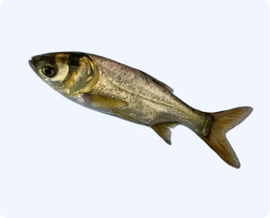

Рыба для пруда
Толстолобик
Цена и наличие
- 4-6 см3 BYN / шт.В наличии
- 6-10 см4,05 BYN / шт.В наличии
- 10-15 см5,1 BYN / шт.В наличии
- 15-25 см8,1 BYN / шт.В наличии
Данные на 23.11.2026.
Характеристики
- Внешний вид
- Тело умеренно длинное, вальковатое, покрыто очень мелкой чешуёй
- Сезонность
- Май-октябрь
- Возраст
- Сеголетки, годовики
- Максимальный вес
- До 25 кг
- Продолжительность жизни
- До 20 лет
- Половая зрелость
- В умеренном климате обычно наступает в возрасте 5–7 лет. Самцы, как правило, созревают раньше самок. В более прохладных условиях отдельные самки могут достигать половой зрелости позже
- Питается
- Преимущественно фитопланктоном — микроскопическими водорослями и цианобактериями. Также в рацион входят детрит, бактерии, коловратки и мелкие ракообразные. Молодь на ранних стадиях питается преимущественно зоопланктоном, а по мере роста переходит на фильтрационное питание фитопланктоном
- Температура воды для активного питания и размножения
- Наиболее активно питается и растет при температуре примерно 23–28 °C. Высокая кормовая активность начинается после прогрева воды примерно выше 20–21 °C. Нерест возможен при температуре 18–30 °C, наиболее благоприятный диапазон — около 22–28 °C
- Условия пруда для содержания
- Подходит стоячий или слабопроточный пресноводный водоем с развитой естественной планктонной кормовой базой и стабильным кислородным режимом. Постоянное течение для содержания не требуется. Для зимовки необходима достаточно глубокая незамерзающая зона и отсутствие продолжительного дефицита кислорода
- Рост
- Сеголетки 10-20 г, двухлетки 250-300 г, четырехлетки – от 1500 г и более
Описание
Цветет вода в пруду? Белый толстолобик питается фитопланктоном и при правильно подобранной плотности посадки может помочь контролировать его избыточное развитие и снизить интенсивность цветения воды.
УСЛОВИЯ ОБИТАНИЯ
Белый толстолобик хорошо подходит для содержания в частных и хозяйственных прудах, озерах, водохранилищах и других пресноводных водоемах со стоячей или медленно текущей водой. Большую часть времени он проводит в толще воды, поэтому наличие илистого дна или густой высшей водной растительности для него не является обязательным условием. Значительно важнее достаточная естественная кормовая база в виде фитопланктона, нормальное качество воды и стабильный кислородный режим. Толстолобик хорошо подходит для совместного выращивания с карпом, белым амуром и другими прудовыми рыбами. Благодаря особенностям питания он использует преимущественно планктонную кормовую базу и поэтому занимает другую пищевую нишу, чем карп, добывающий значительную часть пищи на дне, или белый амур, питающийся высшей водной растительностью. Белого толстолобика часто запускают в пруды для контроля избыточного развития фитопланктона и снижения интенсивности цветения воды. Его жаберный аппарат позволяет отфильтровывать большое количество микроскопических организмов, однако запуск толстолобика не гарантирует, что любой цветущий или мутный пруд станет прозрачным. Результат зависит от размера и количества рыбы, состава фитопланктона, количества питательных веществ в воде и общего состояния экосистемы водоема. Поэтому толстолобика правильнее рассматривать как один из инструментов биологического регулирования фитопланктона, а не как универсальное средство очистки воды. Если причина мутности связана с взвешенным грунтом, илом, органическими загрязнениями или другими факторами, один только запуск рыбы проблему не устранит.
РАЗМНОЖЕНИЕ
В обычном частном пруду белый толстолобик естественным путем, как правило, не размножается. В природе размножение связано с крупными реками: половозрелые рыбы перемещаются к нерестовым участкам, а повышение уровня воды, усиление течения и подходящая температура стимулируют начало нереста. В рыбоводных прудах воспроизводство толстолобика обычно проводят искусственно. Нерест происходит в теплый период года при температуре примерно 18–30 °C, наиболее благоприятным считается диапазон 22–28 °C. Самка способна выметывать сотни тысяч икринок, а плодовитость крупных особей может превышать миллион икринок. Икра белого толстолобика неклейкая и пелагическая или полупелагическая. После оплодотворения икринки поглощают воду, набухают и в естественных условиях развиваются в толще движущейся воды, перемещаясь по течению. Температура особенно важна для развития эмбрионов. Благоприятный диапазон для инкубации составляет примерно 22–28 °C, оптимум — около 26 °C. При подходящих условиях развитие происходит быстро, обычно в течение примерно 1–2 суток, после чего личинки перемещаются в более спокойные и богатые кормом участки.
КОРМЛЕНИЕ
Белый толстолобик — планктоноядная фильтрующая рыба. Основу питания взрослой особи составляет фитопланктон: диатомовые, зеленые и другие микроводоросли, а также различные цианобактерии. Вместе с ними из воды отфильтровываются детрит, скопления бактерий, коловратки и мелкие ракообразные. Молодь питается иначе. На первых этапах развития значительную часть ее рациона составляет зоопланктон, однако по мере роста формируется характерный фильтрационный аппарат из жаберных тычинок и рыба постепенно переходит преимущественно на питание мелкими частицами фитопланктона. Именно особенности питания позволяют использовать толстолобика в продуктивных и склонных к цветению водоемах. При этом нельзя утверждать, что он одинаково эффективно удаляет любые микроводоросли: размер и видовой состав фитопланктона имеют большое значение. Поэтому эффект от зарыбления разных прудов может заметно отличаться. Наиболее интенсивное питание и рост происходят в теплой воде. В холодный период происходит обратное — жизненные процессы и темп питания замедляются. Если в пруду имеется достаточная естественная планктонная кормовая база, отдельное кормление взрослого белого толстолобика обычно не является основной частью технологии его содержания.
ЗИМОВКА
Белый толстолобик способен успешно зимовать в открытых прудах в климатических условиях Беларуси при наличии подходящей глубины и нормального кислородного режима. Осенью по мере охлаждения воды его кормовая активность и обмен веществ заметно снижаются, рыба становится менее подвижной и держится преимущественно в более глубоких и спокойных участках водоема. Толстолобик остается способным двигаться, но в холодной воде его потребность в корме и интенсивность обмена веществ значительно ниже, поэтому специальное зимнее кормление взрослой рыбы обычно не требуется. Основную опасность зимой представляет продолжительный дефицит растворенного кислорода под ледяным покровом. Особенно это актуально для небольших, сильно заиленных, заросших или плотно зарыбленных водоемов, где разложение органики дополнительно расходует кислород. Для надежной зимовки необходимо обеспечить достаточно глубокую незамерзающую зону и контролировать кислородный режим. При угрозе зимнего замора в небольших или непроточных водоемах рекомендуется использовать аэрацию. Весной после прогрева воды и активного развития планктона кормовая активность толстолобика постепенно восстанавливается.